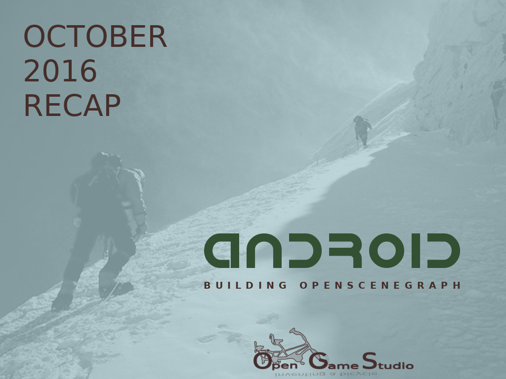

2016-11-19 00:00

Эта статья описывает, как мы потратили месяц на сборку OpenSceneGraph (OSG) под Android: первая попытка собрать OSG, поиск альтернатив OSG и успех в сборке OSG.
Первая попытка собрать OSG.
Не имея опыта разработки под Android, мы взяли последнюю версию Android Studio и начали проходить самоучители для начинающих. Java далась легко. Всё работало из коробки. Затем наступил черёд C++ и проблем.
**CMake. **Android Studio для работы с C++ использует собственную версию CMake, которая конфликтует с системной. Для нас это было явным сигналом о необходимости подготовить отдельное окружение разработки специально под Android.
**KVM. **Мы установили Ubuntu на VirtualBox. Всё шло замечательно до того момента, пока мы не запустили эмулятор Android. Оказалось, что VirtualBox не может запустить эмулятор, т.к. виртуальная машина не предоставляет виртуализацию внутри уже виртуализированного окружения.
**Chroot для Android. **Вспомнив о положительном опыте работы с chroot для сборки OGS Editor, мы решили поместить окружение разработки Android в chroot. После небольших настроек мы сумели запустить эмулятор Android и собрать проект C++.
**OSG. **К этому моменту мы считали, что собрать OSG не составит труда, но не тут-то было. Всё, что мы получили, - это падение. Предположив, что мы ошиблись где-то при первой сборке, мы решили пересобрать OSG ещё раз. И снова получили ту же ошибку. Поиск решения проблемы не дал результатов. Никто не помог нам в списке рассылок OSG.
Мы были в отчаянии.
Поиск альтернатив OSG.
Раз сообщество OSG нам не помогло, мы решили поискать альтернативный открытый проект, который мог решить наши задачи на Android (и, возможно, на других платформах).
Такой проект мы нашли: BabylonHX. Домашняя страница выглядела замечательно: она отображала WebGL в фоне! Промелькнула мысль, что мы наконец нашли алмаз. К сожалению, пример на домашней странице просто не работал.
Думаем, вы понимаете наши чувства на тот момент.
Успех в сборке OSG.
Мы осознали, что никто за нас не запустит OSG на Android. Нужно было сделать это самостоятельно.
Потеряв доверие к очень короткой документации OSG 3.4 по сборке для Android, мы решили использовать первоначальную документацию OSG 3.0. В ходе следования ей мы наткнулись на мёртвую ссылку, которая должна была содержать зависимости. Поиск альтернативной ссылки вывел нас на самоучитель 2013 года по сборке OSG 3.0 для Android.
После прохождения самоучителя мы наконец смогли запустить OSG под Android! Тем не менее, был нюанс: используемые в самоучителе версии OSG и средств разработки Android были древними. В течение нескольких дней мы постепенно довели версии OSG и средств разработки Android до последних.
В ходе этого обновления мы узнали о двух вещах, помешавших нам запустить OSG с первого раза:
На этом мы заканчиваем описание того, как мы потратили месяц на сборку OSG под Android: первая попытка собрать OSG, поиск альтернатив OSG и успех в сборке OSG.